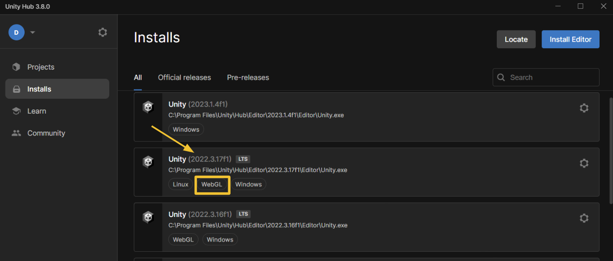
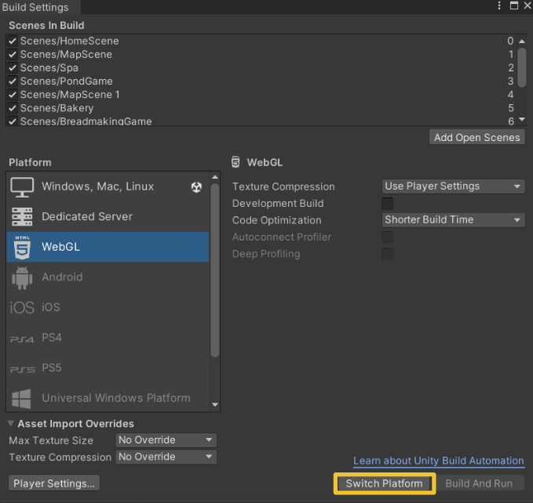

How do I make a Unity game playable in a desktop browser?
The Unity engine offers developers the ability to create WebGL builds of their games, making 2D and 3D games playable in most major web browsers. These builds alleviate the need for players to install plug-ins or download files for a game to be played. This article explains how Unity developers can build desktop browser games with WebGL and host them on the web.
This article applies to all Unity Editor versions from 2019.3 and on, as well as all Unity Hub versions from 3.0 and on.
Note: WebGL provides gameplay support for any platform with a browser, which includes many mobile and console platforms. However, WebGL builds are most efficient for desktop games that aren't graphically demanding, so this article is intended for such games.
Table of Contents
Install WebGL build module
When a version of the Unity Editor is installed, the WebGL build module is not automatically included with it. The following steps ensure the WebGL Build Support module is added to your editor.
- Open Unity Hub and select 'Projects' on the sidebar.
- Find the project you want to make playable in the browser and identify its editor version.
- Select 'Installs' on the sidebar and find the Unity Editor install corresponding to the version used in your project.
- If a 'WebGL' label appears under the install's file path, then you're ready to configure your project's build settings.
- If the Unity Editor install doesn't have a 'WebGL' label, click the install's settings icon, then select 'Add modules'.
- In the popup window that appears, check the 'WebGL Build Support' option listed under 'Platforms', then click the blue 'Install' button.
- In the Downloads window, your project's Unity Editor install should be listed under 'Active' while the WebGL Build Support module downloads. Once the module is finished downloading, the install will move under 'Recent'.

Configure build settings
With the WebGL Build Support module installed, your project can be turned into a WebGL build.
- In the Unity Hub, select 'Projects' and open the project you want to make playable in the browser.
- In the Unity Editor, select 'File > Build Settings...' from the menu bar to open the Build Settings window. Alternatively, you can use the shortcut Ctrl+Shift+B to open the window.
- Under the Platform panel, choose the 'WebGL' option. If there isn't a Unity logo on the right side of the 'WebGL' option, click the 'Switch Platform' button. When the project is done switching platforms, the Unity logo will appear next to 'WebGL' in the Platform panel.
- With the project configured to the WebGL platform, you can change settings such as texture compression, code optimization, and maximum texture size to your liking.
- Ensure that all of the scenes you want in your game appear in the 'Scenes In Build' panel with a checkmark and index number next to them. Scenes can be added to the build by dragging them from the Unity Editor's Project window into the 'Scenes In Build' panel, or by opening the scenes and clicking 'Add Open Scenes' below the 'Scenes In Build' panel. The scene with index 0 will appear first when the game is launched.

Note: Clicking 'Player Settings...' in the bottom-left corner will open a window with dozens of settings options. Although out of the scope of this article, you can read about them in Unity's documentation.
Build and publish a game on the web
Developers can choose between numerous websites for hosting their WebGL games, including their own websites. The two choices discussed in this article are itch.io and Unity Play.
Many independent game developers use itch.io because it allows games to be monetized, supports both downloadable and browser games, and doesn't restrict which engines can be used to create games hosted on the site.
Unity Play is less popular and only supports WebGL builds created with Unity, but its integration into the Unity Engine enables a simple and automated method of uploading games to the site.
Build and publish a game on itch.io
Build the game
- In the Unity Editor, open the Build Settings window using 'File > Build Settings...' from the menu bar, or by using Ctrl+Shift+B.
- With 'WebGL' selected in the Platform panel, click 'Build'.
- A popup window for your computer's file system will appear. Create an appropriately named folder for your build data, then select it.
- Once the game is finished building, find the build folder in your file system and compress it into a ZIP file. The steps for compressing a folder into a ZIP file vary by operating system.
Note: The build folder can go in your project's root folder, but it cannot be placed in the 'Assets' folder.
Publish the game on itch.io
- Open itch.io in a browser and log in or register for an account.
- Click the arrow in the top-right corner of the page, then select 'Upload new project' to enter the 'Edit game' page.
- Type your game's title into the Title field.
- Under 'Classifications', select 'Games'. Under 'Kind of project', select 'HTML'.
- Under 'Uploads', click the 'Upload files' button, locate the zipped build folder in your file system, and select it. Check the 'This file will be played in the browser' option.
- Set the viewport dimensions based on your game's intended aspect ratio.
- Fill out all other fields to your liking, such as the tagline, cover image, frame options, description, and genre.
- If you want your game to be released to the public, select 'Public' under 'Visibility & access'. Otherwise, select 'Draft' or 'Restricted'.
- When you're ready, click 'Save' and then 'View page' to see your game run in the browser.
- You can click 'Edit game' at the top of the play screen to go back and adjust the settings. You can also click 'Edit theme' to change your webpage's background and text colors.

Build and publish a game on Unity Play
- From the Unity Editor menu bar, select 'Window > Package Manager' to open the Package Manager window.
- For the 'Packages' dropdown, choose 'Unity Registry'.
- Search for 'WebGL Publisher' and click 'Install'.
- From the Unity Editor menu bar, select 'Publish > WebGL Project' to make the Publish window appear.
- Click 'Get started', then 'Build and Publish'.
- A popup window for your computer's file system will appear with a new folder called 'WebGL Builds' open. Create an appropriately named folder for your build data within 'WebGL Builds', then select it.
- Once the game is finished building, a browser tab will appear containing the edit screen for your game on Unity Play.
- In Unity Play, add a thumbnail for your game and fill out its title and description fields.
- Click 'Play' to play your game in the browser. The first 15 seconds of your playthrough can be used as a preview for the game. You can choose to re-record the preview.
- When you're ready, click 'Save'. You can return to the edit screen by clicking the three-dots icon in the play screen, and then selecting 'Edit' in the dropdown.
Note: The most recent version of the WebGL Publisher package is version 4.2.3, which works for Unity Editor versions from 2019.3 and on.
Note: You will automatically be logged into your Unity account. You need a Unity account to use the Unity Editor and publish games on Unity Play.